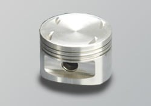

-
hello there i was in the process of rebuilding my z31 turbo with NA (9:1 CR) but i just found out i need new rods (bent) and i was looking at the z32 wiseco pistons with the eagle rods but i want to retain the higher compression to have some more lower end torque, so my question would the NA pistons (10.5:1 CR in the z32 so that equals 9.5:1 CR in the z31) hold up to about 14-16 psi and about 7,000 rpm redline? many people have said that the NA (z31) pistons would hold up well over 350 whp so would .5 more CR make a BIG difference? thanks -
should be fine.
unless there is some design flaw im unaware of?
good tune is crucial. -
Yes it makes a BIG difference because it is a domed piston.300zxtproject wrote: so my question would the NA pistons (10.5:1 CR in the z32 so that equals 9.5:1 CR in the z31) hold up to about 14-16 psi and about 7,000 rpm redline? many people have said that the NA (z31) pistons would hold up well over 350 whp so would .5 more CR make a BIG difference? thanks
9:5

Versus
10:5
Your valves won't be happy.Praying.... -
[quote]1SickZ wrote:oh wow… i didn't know that the NA pistons have the dome design. thanksOriginally posted by 300zxtproject
so does anyone know of some good aftermarket pistons with custom CR for the z31? -
BRCPraying.... -
thanks 1SickZ. i called BRC and the have both 8.5/1 (dish) or 9.2/1 CR (flat) pistons and they also have some connecting rods to go with them for only 360 for the set of rods.... not bad at all. so i guess i'll go with them. 1SickZ, you don't happen to have any pictures of you pistons and/or rods, do you? thanks -
Does anyone know if the BRC rods would fit STOCK w-series z31 pistons? i need some new rods and i want to keep the 9:1 NA CR. thanks -
BRC makes custom parts.. so they will fit if you ask them to make one that fit.300zxtproject wrote: Does anyone know if the BRC rods would fit STOCK w-series z31 pistons? i need some new rods and i want to keep the 9:1 NA CR. thanksJukka Kivinen - Europe / Finland - '88 Turbo 2+2 Targa
Datsun Nissan Sports Cars of Finland
http://www.z31turbo.com / http://www.z31na.com -
ok now i know that the NA wiseco pistons won't fit due to the dome design that they have. so does any other company make flat or dished pistons (besides BRC) for the NA z32 that will fit a Z31? i would really like to have 9.5:1 CR or at least 9:1 with some forged aftermarket pistons. thanks -
Well, the problem you are facing is that in order to up the compression you have to have dome on the piston. Since there is going to have a dome and be made for the z32, It is not going to match the combustion chamber of the z31.300zxtproject wrote: ok now i know that the NA wiseco pistons won't fit due to the dome design that they have. so does any other company make flat or dished pistons (besides BRC) for the NA z32 that will fit a Z31? i would really like to have 9.5:1 CR or at least 9:1 with some forged aftermarket pistons. thanks85 Z31 6.0 LSX turbo 766whp/792wtq
04 GTO, LS6, big cam, porting, N20… underway for summertime daily driver. -
yea i understand, thanks for the response. so it seems like the BRC 8.5:1 CR piston are the closest i'll get to the stock NA CR. thanks -
stop thinking off the shelf and look into what companies want for custom compression ratios that will work with SOHC heads. there's a reason so much shit is custom fabbed in this community, because there's little to no aftermarket =( -
What he said.............. Guy think they can slap any pistson in their block…lol. Different valve cuts/reliefs and different pistons designs(dome, dish etc.) might not play nice.Andrevas wrote: stop thinking off the shelf and look into what companies want for custom compression ratios that will work with SOHC heads. there's a reason so much shit is custom fabbed in this community, because there's little to no aftermarket =(
I don't like the bottom end of a 8.5:1 turbo car on the street to say the least. I'll take a 9:1 turbo street car any day over the later.
BRC makes top shelf shit.........period. I wouldn't hesitate to use them again for ANY custom piston application from a N/A VG to the custom BMW V8 a friend is building. You don't need Ceramic coated tops but moly coated skirts is worth every red cent IMVHO and IME.
PeaceUcked Fup!!! -
BRC made 9:1's for my Z even made them to fit my stock rods--88na-t88na2T-s13,q45 swap 12.6@110mph
87T 2+2 auto,stock

Copyright © 2006–. All rights reserved. Privacy Policy